授課教師：薛念林 教授
江 Sir 皺著眉頭：「對不起，我們還不能驗收。這個系統可絕不能在正式上線時出錯啊！」 雄太拍著胸脯：「我敢保證！現在系統經過測試，絕對沒有任何錯誤了！」 江 Sir 冷笑了一下：「我倒是懂得一點軟體測試的根本原則——軟體測試只能證明程式有錯，永遠無法證明程式絕對沒有錯誤！」 雄太一下子愣住了...
「綠燈起步時依然減速張望—— 預防錯誤擴散的主動工程態度。」
requires
ensures
maintains
balance >= 0
totalDeposits == sum(transactions)
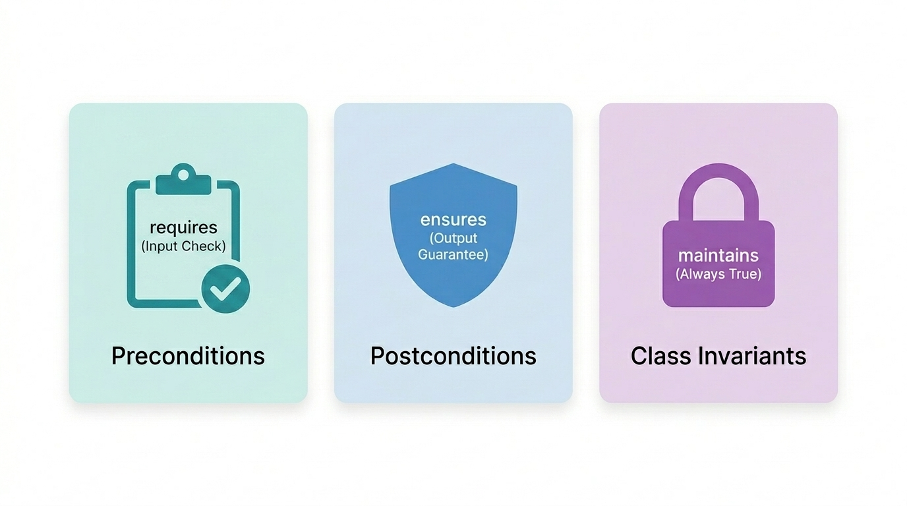
-ea
-da
問題：在契約式設計 (Design by Contract) 中，由「呼叫者 (Caller)」負責滿足、若不滿足則被呼叫方法將拒絕執行，這在契約三要素中屬於？
A. 前置條件 (Preconditions)
B. 後置條件 (Postconditions)
C. 類別不變量 (Class Invariants)
D. 異常防護 (Exceptions)
「測試是一門基於風險取樣的經驗科學， 而非盲目的無窮迴圈。」
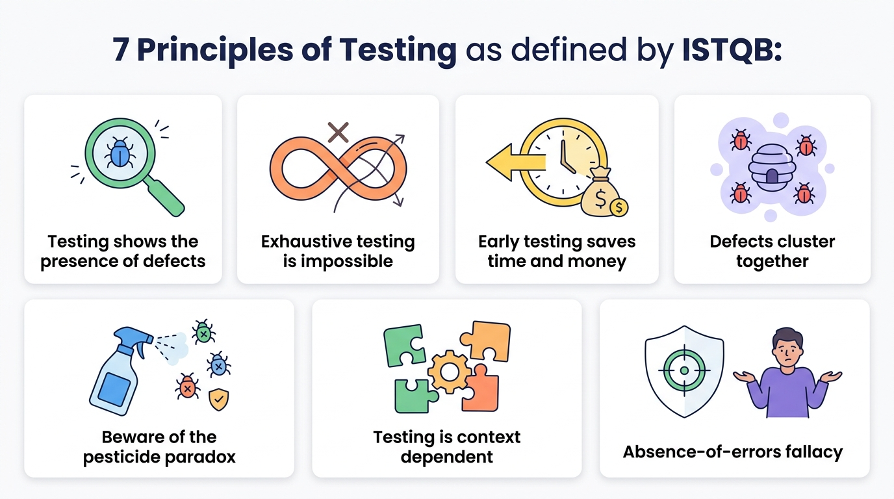
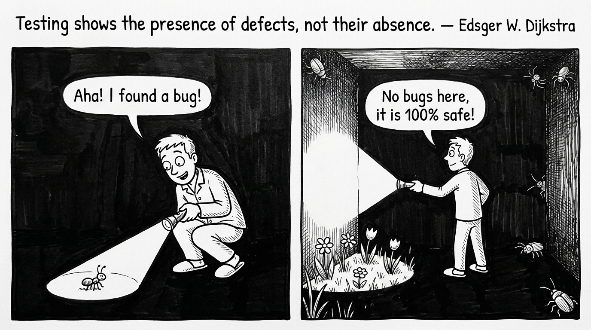
int scale (int j) { j = j - 1; // 正確應為 j = j + 1 j = j / 3000; return j; }
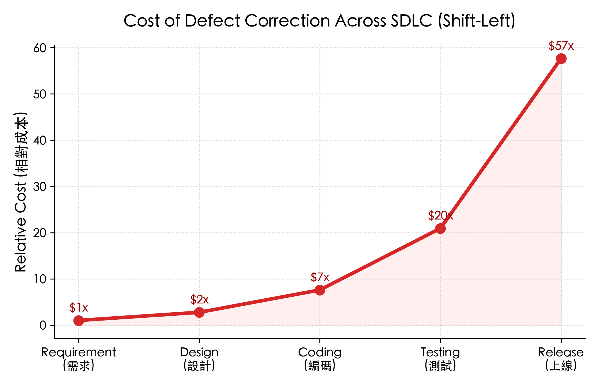
問題：某工程師使用 AI 秒速生成一套複雜利息計算演算法，隨即讓同一個 AI 幫忙生成單元測試。測試跑出 100% 覆蓋率全綠燈通過，但在實際上線後卻被金融主管機關判定年息公式違反法規。依據 ISTQB 測試原則，這最主要反映何種問題？
A. 測試工程師未安裝最新的 JDK 執行環境
B. AI 測試陷入「殺蟲劑悖論（自我印證盲區）」與「原則 7：無錯謬誤（程式碼無語法錯誤但偏離法規與真實業務需求）」
C. 只要測試覆蓋率達 100%，系統必然在法律上具備合規性
D. 這是硬體浮點數運算器的製造缺陷
「從微觀的類別方法， 到宏觀的端到端商業價值交付。」
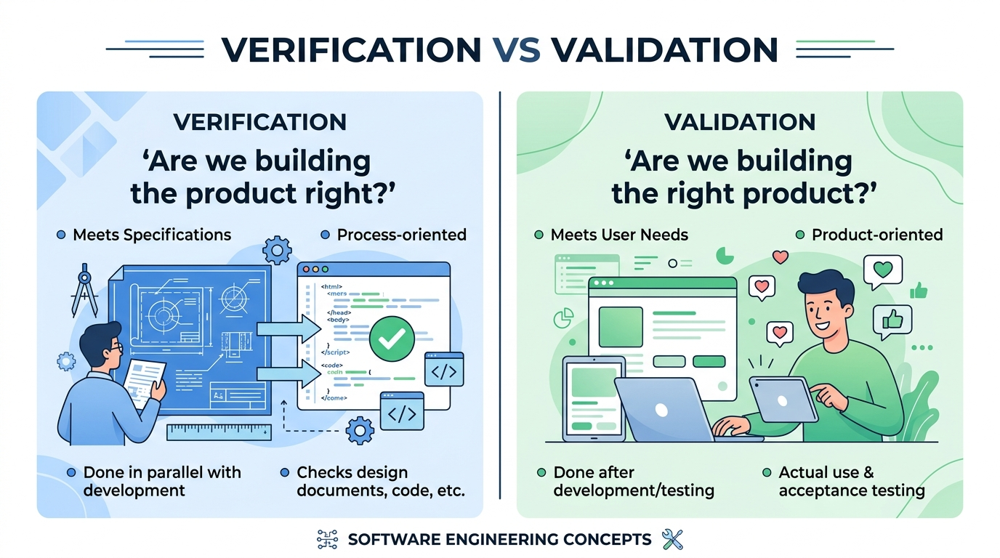
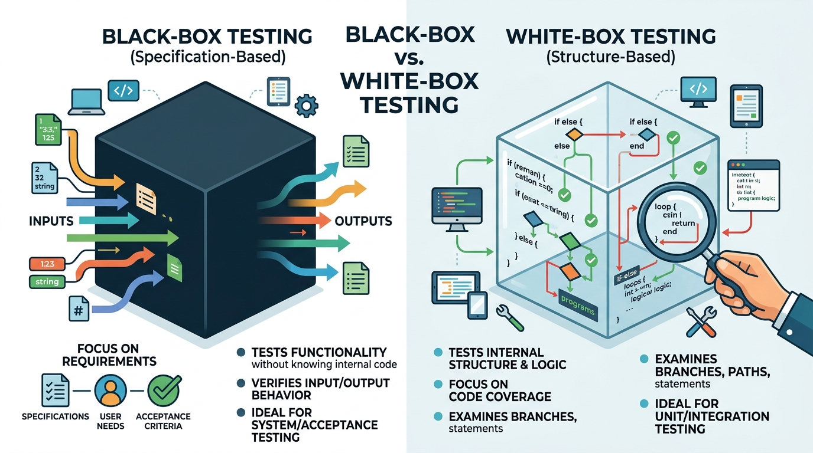
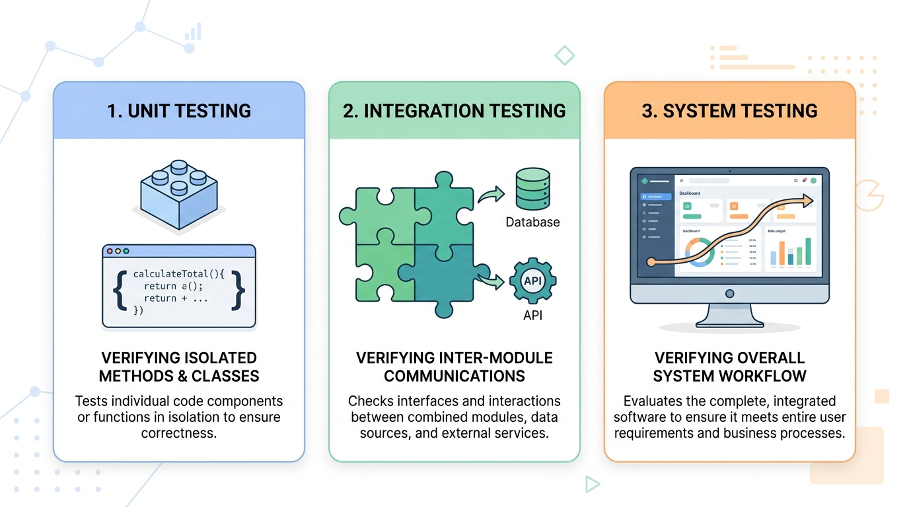
// 不良設計：業務邏輯與 UI 輸入強耦合，無法自動化單元測試 double div(double x, double y) { while (y == 0) { y = input("除數不可為 0，請重新輸入："); // 強烈依賴 UI } return x / y; } // 良好設計：純邏輯模組，拋出明確例外，極易進行 JUnit 自動化測試 double div(double x, double y) { if (y == 0) { throw new IllegalArgumentException("除數不得為 0"); } return x / y; }
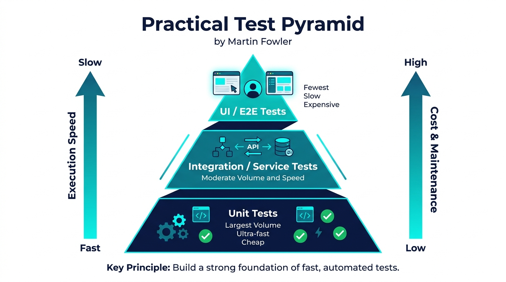
「規格設計在前，測試準備在先； 水平對稱，雙向追溯。」
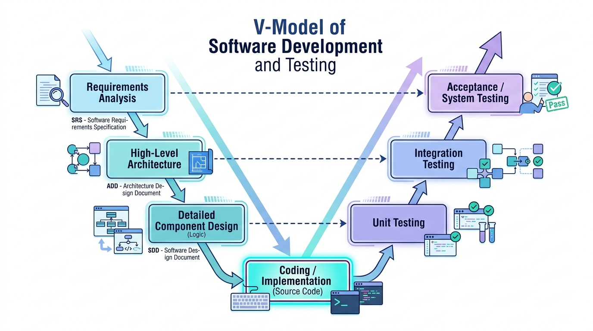
問題：在標準 V 開發模型中，依據「高階架構設計文件 (ADD)」所定義的模組介面與通訊協定，所對應執行的測試層級為何？
A. 單元測試 (Unit Testing)
B. 整合測試 (Integration Testing)
C. 驗收測試 (Acceptance Testing)
D. 靜態程式碼檢視 (Code Review)
「測試案例是測試架構的靈魂， 測試資料只是代入的數值。」
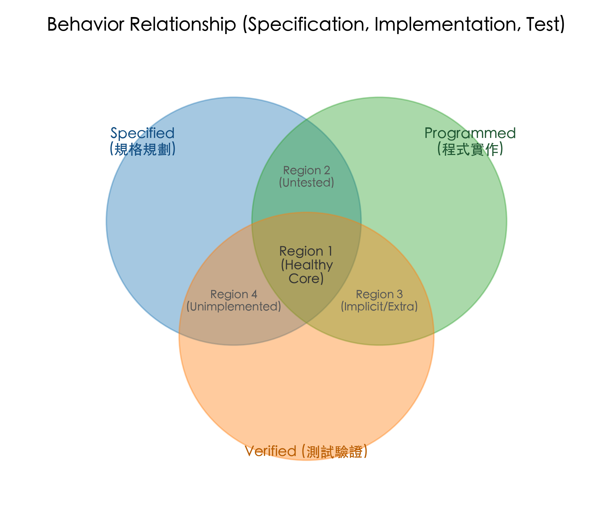
【測試案例規劃】：除法運算 ├── 分母 = 0 ── 測試資料: (5, 0) ──> 預期: 拋出 IllegalArgumentException └── 分母 != 0 ├── 整除 ── 測試資料: (4, 2) ──> 預期: 2.0 └── 不整除 ├── 進位 ── 測試資料: (5.1, 3) ──> 預期: 1.7 └── 不進位 ── 測試資料: (4, 3) ──> 預期: 1.33
TC-AUTH-001
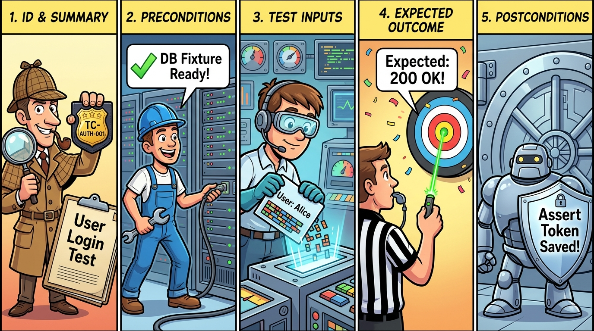
「5 大維度看透測試全景； 突破 AI 時代的測試預言機難題。」
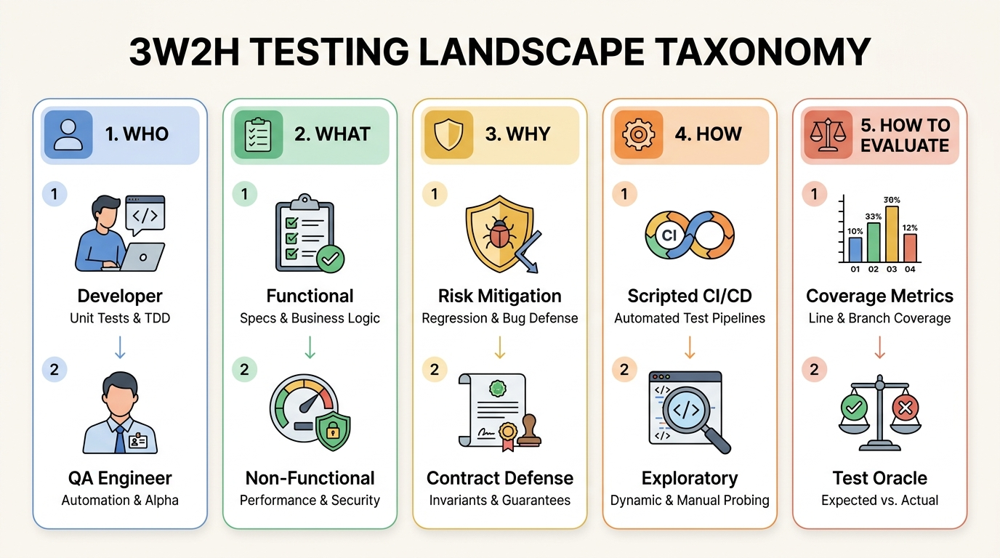
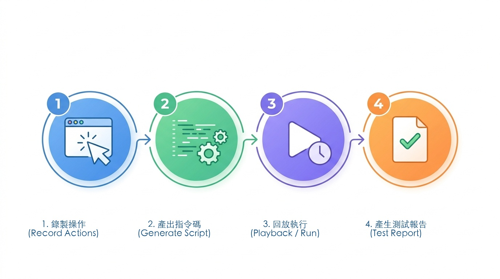
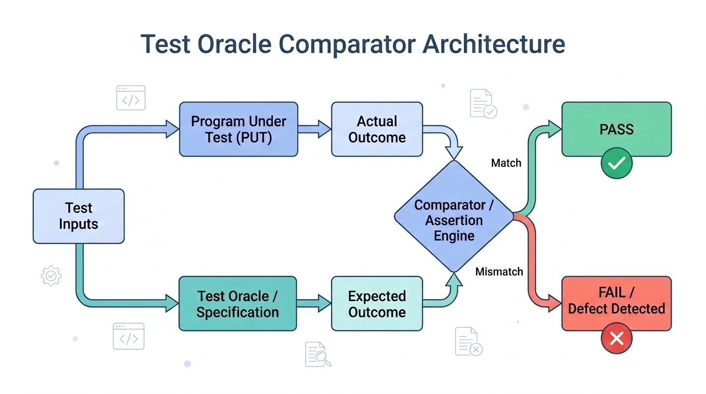
主題：如何為沒有唯一標準答案的 AI 與複雜系統建立 Test Oracle？
1. 變質測試 (Metamorphic Testing)：利用領域對稱不變量（貓圖片旋轉 10 度辨識結果仍為貓）
2. 差分測試 (Differential Testing)：多模型交叉對比（Claude vs. GPT）
3. LLM-as-a-Judge 與 Guardrails：使用評估模型檢驗忠實度與安全性
「將原則內化為直覺， 以架構捍衛品質。」
int getGCD(int x, int y);
int[] sort(int[] data);
各題答案與關鍵解析
id: sqa-ch03-ccq1
id: sqa-ch03-ccq2
id: sqa-ch03-ccq3
id: sqa-ch03-short1